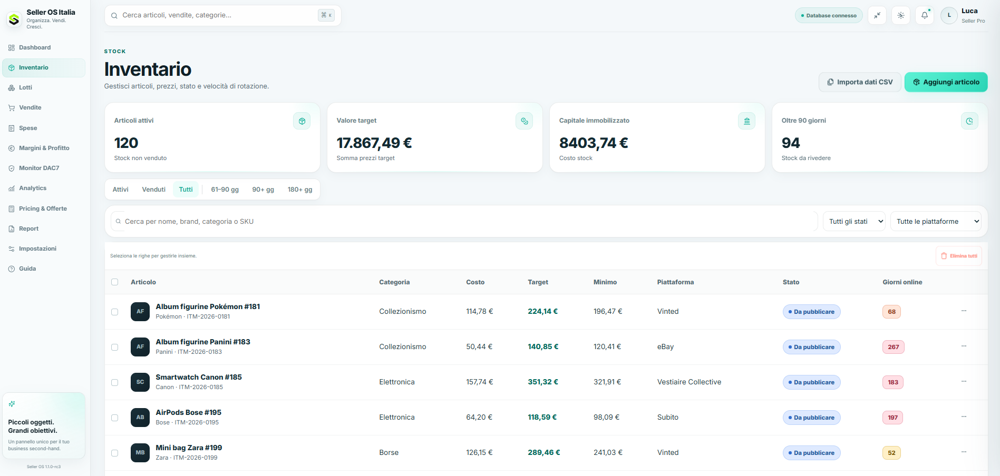
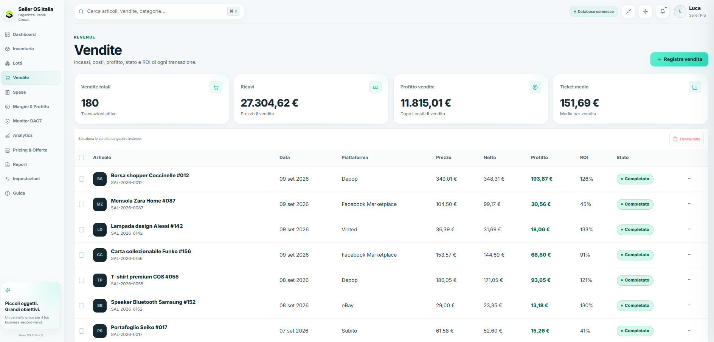
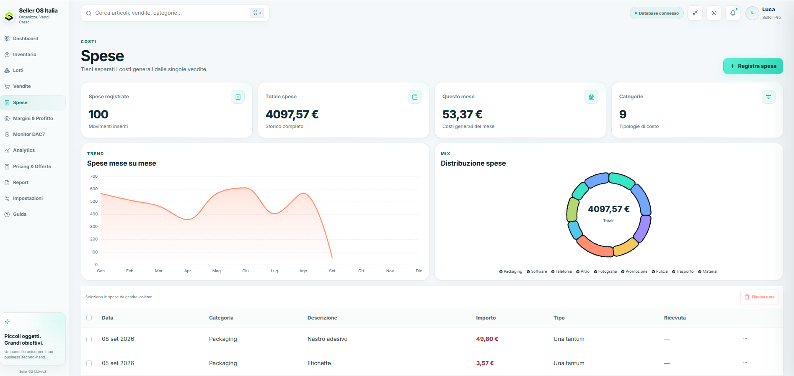
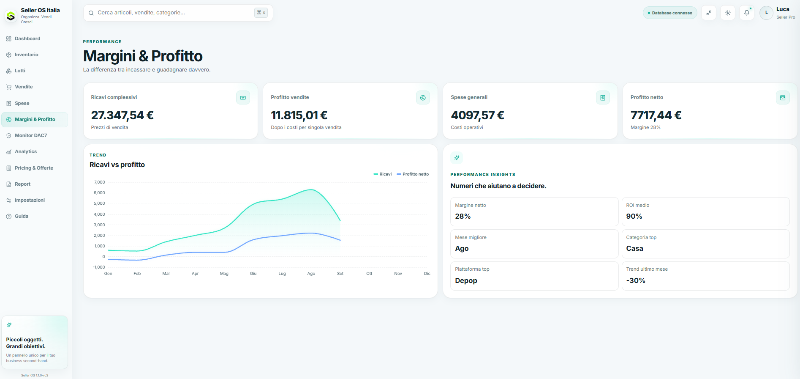
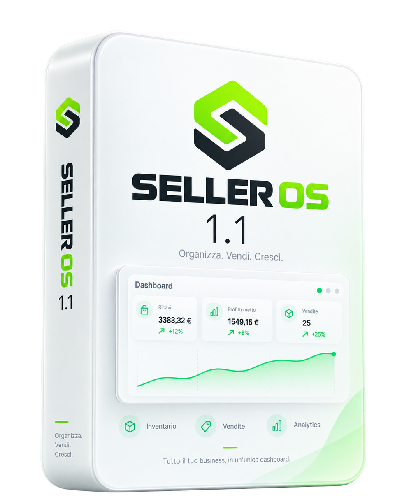

Gestisci il tuo business di vendita
come un sistema
Seller OS riunisce inventario, vendite, costi, profitti e storico pluriennale in un unico sistema pensato per chi vende online
Tutto in un unico posto
Dai prodotti in magazzino ai risultati delle vendite
Ogni prodotto al posto giusto
Organizza prodotti, lotti e disponibilità. Ritrova costi di acquisto e stock senza passare da un file all’altro.
Prodotti, lotti e stock



Dalla vendita al profitto
Importa, organizza e registra: i tuoi dati seguono il lavoro che fai
- IMPORT
Importa i dati con i file CSV
- MANAGE
Organizza prodotti, lotti e stock
- SELL
Registra vendite e rimborsi
- TRACK
Tieni traccia di costi e spese
- ANALYZE
Leggi margini, trend e risultati
- CONTROL
Decidi con i dati davanti
Leggi meglio i tuoi risultati
Analytics per anno, trend pluriennali, KPI e report per capire come sta andando la tua attività
Tutto ciò che ti serve,
niente di superfluo
- 01
Seller OS 1.1
Sistema Google Sheets + Apps Script con dashboard e storico pluriennale
- 02
Welcome Pack
Guida alla configurazione e risorse di supporto
- 03
Quick Start
Le istruzioni per iniziare senza perdere tempo
- 04
Template CSV
Tre template ufficiali per inventario, vendite e spese
- 05
Aggiornamenti 1.x
Aggiornamenti Seller OS 1.x inclusi quando disponibili

Guarda Seller OS in azione
Una panoramica del flusso operativo
Demo guidata di Seller OS 1.1Il video dimostrativo verrà pubblicato prima dell’apertura delle venditeUn sistema completo,
un solo acquisto
Un acquisto per organizzare il lavoro di ogni giorno
Scopri cosa riceviuna tantum
Pagamento una tantum·Nessun abbonamento·Consegna dopo verifica
Aggiornamenti Seller OS 1.x inclusi quando disponibili
PayPal o bonifico · verifica normalmente entro 24 oreHai qualche domanda?
Partiamo da quelle più comuni
Seller OS è un sistema operativo in Google Sheets pensato per chi vende online. Riunisce inventario, vendite, spese, rimborsi, margini, profitti e storico pluriennale in un unico control center.
No. Seller OS si acquista una sola volta. Il prezzo promozionale attuale è €49 una tantum, anziché €79, senza canone mensile.
Ricevi Seller OS 1.1, Welcome Pack, Quick Start, guida CSV e i template ufficiali per importare inventario, vendite e spese.
No. Seller OS funziona in Google Sheets dal browser. Dopo aver creato la tua copia privata autorizzi Google Apps Script al primo utilizzo.
Sì. Puoi importare i dati tramite i template CSV ufficiali per inventario, vendite e spese e continuare poi a lavorare direttamente nel sistema.
Gli aggiornamenti Seller OS 1.x sono inclusi quando disponibili. Eventuali versioni future di nuova generazione potranno avere condizioni differenti.